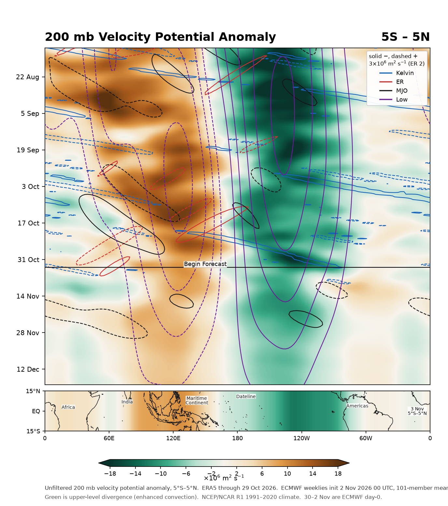

Weather Programmer / tropical forcing
200 mb velocity potential anomaly from 5°S to 5°N. Green is upper-level divergence (rising air). Brown is upper-level convergence (sinking air). The forecast is the ECMWF extended-range ensemble mean.
Loading latest init…

Time increases downward. The map under the Hovmöller is the 5°S–5°N field on the first forecast day, drawn across 15°S–15°N so the landmasses show where that anomaly sits.
The shading is the unfiltered 200 mb velocity potential anomaly. Contours are the filtered Kelvin (blue), equatorial Rossby (red), MJO (black), and low-frequency (purple) pieces. Solid contours are negative (rising air); dashed contours are positive (sinking air). The contour interval is 3×106 m2 s−1 for Kelvin and low frequency, 2×106 for equatorial Rossby, and for the MJO 1.5×106 on rising (negative) and 2×106 on sinking (positive). The method is Wheeler and Weickmann (2001), with the forecast appended to the observations instead of climatology.
The equatorial map is that same 5°S–5°N anomaly at the start of the forecast, the current state of the velocity potential field, spread across 15°S–15°N only so the coastlines can place it. It is not a separate latitude-by-latitude calculation.
ERA5 carries the analysis. The ECMWF weeklies are published about two days after they run, so the forecast can start ahead of the latest ERA5 day. Those intervening days are each run’s own ensemble-mean analysis (lead 0). The climate is NCEP/NCAR Reanalysis 1, 1991–2020.